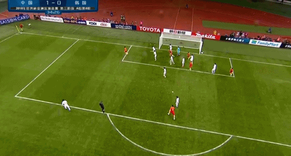

国足12强赛首胜：此前5轮比赛，国足只拿到2平3负的战绩，其中在前任主帅高洪波麾下只取得1平3负的成绩，里皮上任后的正式比赛首秀，国足和卡塔尔0-0战平。与韩国队的较量，国足终于打破了连续不胜的尴尬，拿到了12强赛的首胜。福将破国足12强赛408分钟球荒：自首轮和韩国队第76分钟进球后，到上轮0-0战平卡塔尔，国足在12强赛已经连续374分钟无法进球。再次和韩国相遇，国足终于在第34分钟取得进球，12强赛不进球的尴尬纪录定格在408分钟。值得一提的是，与韩国队一役的进球，是于大宝代表国足在长沙取得的第6球。
A级赛事逢韩第2胜：自1978年交手开始，此前在国际A级赛事中，国足仅在2010年的东亚杯以3-0战胜过对手，其余30场比赛非平即负。不过这一次12强赛的第2次相遇，国足终于在A级赛事中取得对韩国队的第2场胜利，同时也是世预赛阶段，国足首次战胜韩国队。里家军（常规时间）首胜，12强赛续命：里皮上任后，此前3场正式比赛都未能在常规时间取得胜利，战平卡塔尔、不敌冰岛、战平克罗地亚，但战胜韩国后，里皮取得入主球队后的首胜。而且这场胜利，让国足继续保留12强赛晋级的希望。
开场不到1分钟，王永珀禁区前沿逼得韩国队长寄诚庸犯规，国足获得任意球机会，张稀哲开出战术任意球，张琳芃后插上一脚射门但直接飞向看台。第13分钟，国足掷出右侧界外球，张琳芃拿球直接传中，于大宝插上稍慢，被对手将球破坏出底线。第17分钟，金珍珠突破未果将球回做给李庭协，李庭协一脚远射擦着横梁飞出底线。

第28分钟，韩国队后卫突然脚下打滑，武磊拿球随后斜传至禁区，于大宝前插抢在对手后卫封堵之前扫射，但被权纯泰将皮球没收。
| 数据 | 中国 | 韩国 |
|---|---|---|
| 进球 | 1 | 0 |
| 控球率 | 35.7% | 64。3% |
| 助攻 | 1 | 0 |
| 射正 | 12 | 12 |
| 角球 | 6 | 6 |
| 任意球 | 15 | 19 |
| 无论如何，我们赢啦！！！ | ||